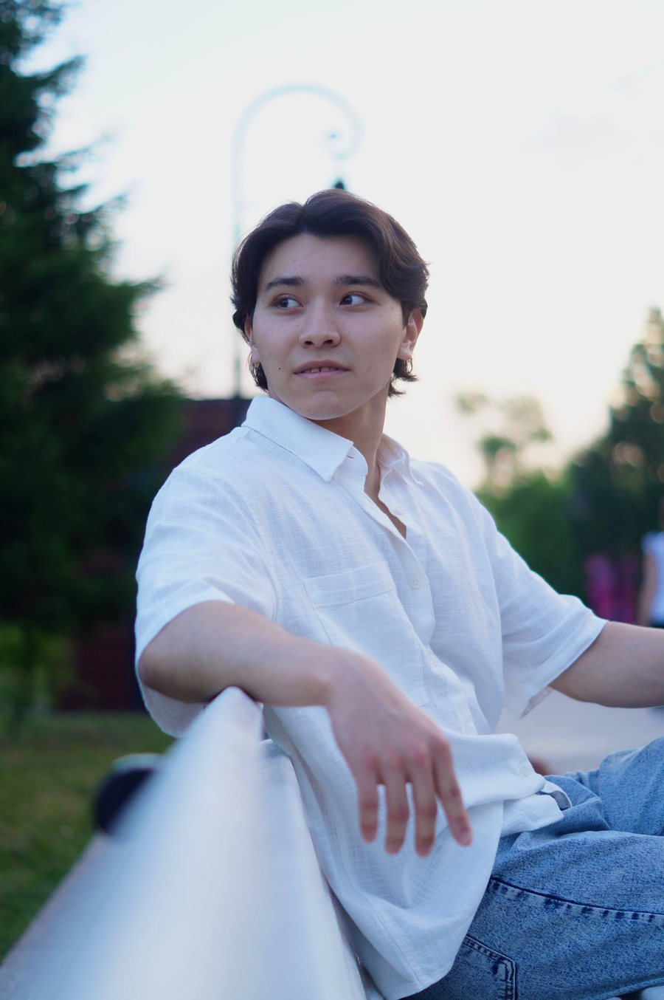

Рилсы под ключ
Идея, сценарий, съёмка и монтаж. Вы получаете готовые ролики, которые остаётся только выложить. Один выезд — несколько роликов за смену.

Reels Maker Астана · общепит и ритейл
А не просто набирают лайки. Идея, сценарий, съёмка, монтаж — и я сам в кадре как лицо заведения. Мой лучший ролик собрал 4 млн просмотров.
WhatsApp: @daniyar2110 · Instagram: @daniyar.217
Беру на себя всё — от идеи до готового ролика. Не нужно искать сценариста, оператора и монтажёра отдельно.
Идея, сценарий, съёмка и монтаж. Вы получаете готовые ролики, которые остаётся только выложить. Один выезд — несколько роликов за смену.
Становлюсь лицом заведения — гостям проще прийти туда, где их уже «встретил» знакомый человек. И съёмка не сорвётся из-за сторонней модели, которая опоздала или не пришла.
Что и когда выходит, чтобы аккаунт жил регулярно, а не от случая к случаю.
Фото для меню, карточек товаров и соцсетей.
Ролики в TikTok залетали, гости узнавали меня лично и приходили за этим.
Статистика не сохранилась — аккаунт в TikTok закрыт.
Промо акции «Час игры за сторис»: гость выкладывает сторис с отметкой клуба — и получает час бесплатно в следующий визит.
Никаких брифов на десять страниц. Вы пишете, дальше я веду процесс и держу вас в курсе.
Пишете в WhatsApp или в директ Instagram: что за заведение и чего хотите добиться.
Обсуждаем задачу и объём, я предлагаю идеи и контент-план под ваше заведение.
Приезжаю к вам и снимаю несколько роликов за смену. Если нужно — сам выхожу в кадр.
Монтирую и отдаю ролики, готовые к публикации.
Стоимость зависит от задачи и объёма — назову в переписке за пару минут. Не уверены, что выбрать? Подскажу, с чего начать.
Чтобы познакомиться и посмотреть на результат. Идея, сценарий, съёмка, монтаж.
Узнать стоимостьАккаунт не простаивает.
Узнать стоимостьС контент-планом на месяц.
Узнать стоимостьС контент-планом на месяц.
Узнать стоимостьДля сетей и активных аккаунтов.
Узнать стоимостьВ любом формате могу сниматься сам — как лицо заведения. Работаю в Астане; другие города, выезд и срочный монтаж обсуждаем отдельно.
Зависит от формата и объёма. Напишите, что нужно, — назову цену в переписке за пару минут.
Предоплата — в том числе за пробный ролик.
Сроки называю до начала работы, на созвоне, и держу их.
Количество правок фиксируем заранее. В пробный ролик входит одна правка после просмотра.
Отдаю готовые видео и подписи к ним. Выкладываете вы или я — как договоримся.
Не обязательно. Могу сниматься сам — тогда съёмка не зависит от сторонних моделей. Могу снять ваших сотрудников или гостей.
Все ролики остаются у вас. Если не хотите зависеть от одного человека, снимаем вместе с вашими сотрудниками — их тоже начнут узнавать.
Расскажите, что у вас за заведение. Идеи для роликов предложу уже в переписке.